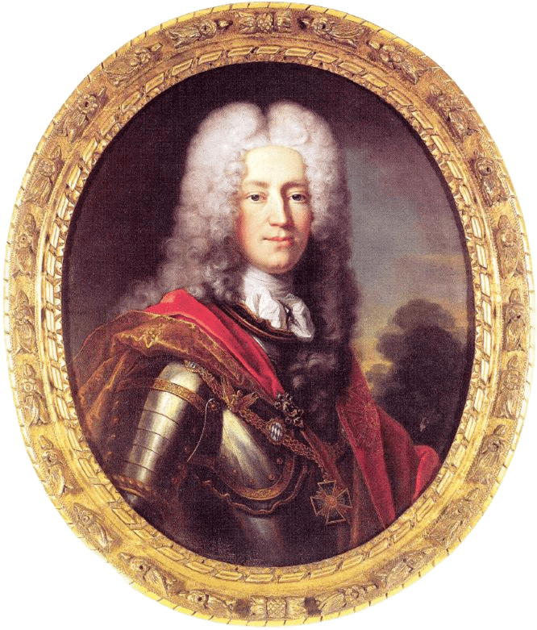
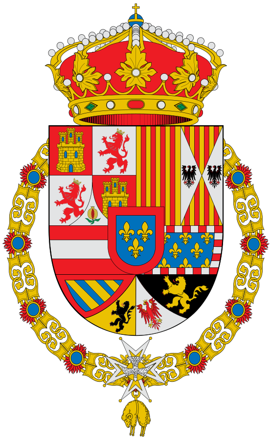

Bienvenido a la monarquía española desde Felipe V
Felipe V, el primer Borbón de España
Conoce la historia de los reyes desde 1700
Desde Felipe V hasta Felipe VI

Introducción
La dinastía de los Borbones ha sido una de las más importantes en la historia de España. Su llegada al trono español marcó un cambio significativo en la monarquía del país, trayendo consigo no solo una nueva familia real, sino también una serie de reformas políticas y sociales que transformaron la nación.

Orígenes de la Dinastía de los Borbones
La historia de la dinastía de los Borbones comienza en el siglo XVI, cuando el príncipe francés Luis de Borbón se casó con la princesa María Teresa de Austria. Este matrimonio fortaleció los lazos entre las casas reales de Francia y España, allanando el camino para la llegada de los Borbones al trono español en el siglo XVIII.
La casa de Borbón ha reinado en España desde 1700 hasta la actualidad, excepto durante la ocupación francesa (1808-1813), el Sexenio Revolucionario (1868-1874), la Segunda República (1931-1939) y la dictadura franquista (1939-1975).

La rama Bourbon-Anjou, castellanizada simplemente como Borbón, proviene de Felipe de Francia, duque de Anjou, nieto de Luis XIV de Francia, proclamado en 1700 rey de España con el nombre de Felipe V. Esta proclamación dio pie a la guerra de sucesión española, contra el pretendiente de la casa de Austria, el archiduque Carlos de Austria.
La casa de Borbón española se escindió en el siglo XIX en dos ramas rivales. La carlista proveniente del pretendiente Carlos María Isidro de Borbón, enfrentada a la línea reinante, proveniente de Isabel II de España y su marido, el rey consorte, Francisco de Asís de Borbón.


Este conflicto se concretó en diversas guerras civiles, las llamadas guerras carlistas. Tras la extinción de la línea carlista principal, la mayor parte de los carlistas actuales reconoció como heredera a la familia Borbón-Parma, representada actualmente por Sixto Enrique de Borbón-Parma.
Felipe V de Borbón es conocido por haber llevado a cabo importantes reformas que modernizaron el país y sentaron las bases para el futuro desarrollo de España como una potencia mundial.Antes de ser proclamado rey de España, Felipe V había sido el duque de Anjou y había vivido en la corte francesa.
A su llegada a España, se encontró con un país en crisis política y económica, en el que cada región tenía sus propias leyes y costumbres.

Felipe V tomó el control de la situación y puso en marcha una serie de reformas para unificar el país y modernizar su economía. Entre ellas, destaca la creación del Banco de San Carlos en 1701 y la reforma fiscal de 1715, que estableció un sistema impositivo más justo y equitativo.
El legado de Felipe V de Borbón como rey de España fue fundamental para la historia del país.
| Rey | Dinastía | Reinado | Notas |
|---|---|---|---|
| Felipe V | Borbón | 1700–1724 / 1724–1746 | Abdicó brevemente en su hijo Luis I |
| Luis I | Borbón | 1724 | Murió tras 7 meses de reinado |
| Fernando VI | Borbón | 1746–1759 | Hijo de Felipe V |
| Carlos III | Borbón | 1759–1788 | Rey ilustrado |
| Carlos IV | Borbón | 1788–1808 | Abdicó tras el motín de Aranjuez |
| Fernando VII | Borbón | 1808 / 1813–1833 | Destituido por Napoleón en 1808 |
| Isabel II | Borbón | 1833–1868 | Derrocada por la Revolución Gloriosa |
| Alfonso XII | Borbón | 1874–1885 | Restauración borbónica |
| Alfonso XIII | Borbón | 1886–1931 | Exiliado tras proclamación de la Segunda República |
| Juan Carlos I | Borbón | 1975–2014 | Restauró la monarquía parlamentaria |
| Felipe VI | Borbón | 2014–presente | Rey actual |